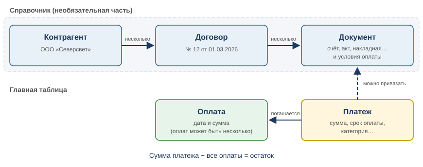
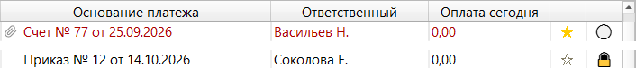

Раздел 1. О программе и основные понятия |
Для чего нужна программа |
«Платежный календарь» помогает не забыть, что, кому и когда нужно заплатить, и видеть, сколько уже заплачено. В программе вы:
Данные хранятся на вашем компьютере. Интернет нужен только для синхронизации и проверки обновлений.
Платеж и оплата |
Платеж — это строка в главной таблице: что нужно заплатить (наименование), кому (получатель), сколько (сумма) и к какому дню (срок оплаты).
Оплата — запись о том, что по платежу заплатили: дата и сумма. Оплат у платежа может быть несколько: сначала часть суммы, потом остальное. Платеж — это «надо заплатить», а оплата — это «заплатили». Оплату вносит кнопка «Оплатить» в панели сведений (раздел 4).
Остаток платежа — сколько по нему ещё не заплачено: сумма платежа минус все оплаты.
Пример. Платеж «Электроэнергия за сентябрь» на 120 000,00 со сроком оплаты 15.10.2026.
| Что произошло | Остаток | Состояние платежа |
|---|---|---|
| Платеж создан | 120 000,00 | не оплачен |
| 10.10.2026 внесена оплата 50 000,00 | 70 000,00 | оплачен частично |
| 14.10.2026 внесена оплата 70 000,00 | 0,00 | оплачен полностью |
Если остаток равен нулю, платеж оплачен. Если остаток больше нуля, а срок оплаты прошёл, платеж просрочен. Фильтры — в разделе 5.
|
💡 Совет. Платеж, который вы полностью оплатили сегодня, до конца дня остаётся среди неоплаченных: найти его и проверить сумму поможет флажок «ОПЛАТА СЕГОДНЯ». С завтрашнего дня платеж переходит в «Оплаченные». |
Оплату с будущей датой внести можно: программа переспросит «Уверены, что хотите продолжить?». Оплату больше остатка внести нельзя; ошибочную оплату можно изменить или удалить (раздел 4).
У каждого платежа есть вид (поле «Вид», столбец «Вид платежа»):
| Вид | Что означает |
|---|---|
| по факту | Обычный платеж, вид по умолчанию |
| предоплата | Платеж, который оплачивается заранее, до получения товара или услуги. Только пометка: на расчёты и фильтры не влияет |
| возврат | Деньги вернулись вам. Подробнее ниже |
Возврат устроен иначе, чем остальные виды:
|
⚠️ Внимание. Слово «предоплата» встречается в программе в двух разных местах. «Предоплата» как вид платежа — просто пометка. «Предоплата / Срок явно не определён» как тип срока оплаты в документе договора означает, что срок по документу вычислить нельзя (см. раздел 7). |
Даты платежа |
У платежа три разные даты, их легко перепутать:
| Дата | Где вводится | Что означает |
|---|---|---|
| Дата возникновения | поле платежа | Когда произошло событие, от которого отсчитывается срок: например, выставлен счёт или подписан акт. Нужна для расчёта срока оплаты |
| Срок оплаты | поле платежа | К какому дню платеж нужно оплатить. По нему работают фильтры «Просроченные», «Сегодня» и т. д. |
| Дата оплаты | при внесении оплаты | Когда деньги ушли на самом деле. У каждой оплаты своя |
Дата возникновения не может быть позже срока оплаты: иначе программа не сохранит платеж («Дата возникновения не может быть больше срока оплаты»).
Категория, НДС и ответственный |
Категория — статья расходов платежа: «Налоги и сборы», «Энергоносители», «Услуги связи» и т. д. Три раздела верхнего уровня:
Таблица группирует платежи по категориям (раздел 2); категория используется в фильтрах и отчётах.
НДС подставляется при выборе категории и может быть изменён.
Ответственный — сотрудник, отвечающий за платеж. Выбирается из списка или кнопкой «По должности…». Сотрудники и должности ведутся в «Настройки» → «Персонал». Платеж без ответственного сохранить нельзя.
Контрагент, договор, документ |
Получателя можно просто вписать в платеж текстом. Но если есть договор и счета, их удобно завести в окне «Контрагенты и договоры»: тогда программа сама вычислит срок оплаты по условиям договора. Цепочка из трёх ступеней:

Рис. 1. Связь понятий. Контрагент, договор и документ — справочник, платеж ведётся отдельно и привязывается к нему по желанию. У платежа может быть несколько оплат.
Платеж можно привязать к документу договора — тогда программа предложит рассчитанный срок оплаты. Привязка необязательна. Как привязывать и отвязывать — в разделе 6.
|
💡 Совет. Поле «Получатель» не связано со списком контрагентов: это обычный текст с подсказками из прежних платежей. Вписывайте получателя одинаково, и по нему удобно искать. |
Отметки платежа: «На контроле» и «Скрытый платеж» |
Эти отметки не влияют на суммы и сроки.

Рис. 2. Столбцы со звёздочкой и замком. В первой строке платеж «на контроле» (жёлтая звёздочка), во второй — скрытый платеж (замок).
Коротко: что есть что |
| Понятие | Что это | Где увидеть |
|---|---|---|
| платеж | Строка таблицы: что, кому, сколько, к какому сроку | Главная таблица |
| оплата | Дата и сумма, которые заплатили по платежу | История оплат в панели сведений под таблицей |
| остаток | Сумма платежа минус все оплаты | Панель сведений, столбец «Остаток платежа» |
| срок оплаты | Дата, к которой нужно заплатить | Столбец и поле «Срок оплаты» |
| категория | Статья расходов | Заголовки разделов таблицы, поле «Категория» |
| ответственный | Сотрудник, отвечающий за платеж | Столбец и поле «Ответственный» |
| контрагент → договор → документ | Справочник организаций, договоров и счетов | Окно «Контрагенты и договоры» |
| На контроле | Звёздочка: важный платеж | Столбец со звёздочкой, пункт «На контроле» в меню «Вид» |
| скрытый платеж | Замок: платеж, который можно не показывать при экспорте | Столбец с замком, флажок в окне платежа |